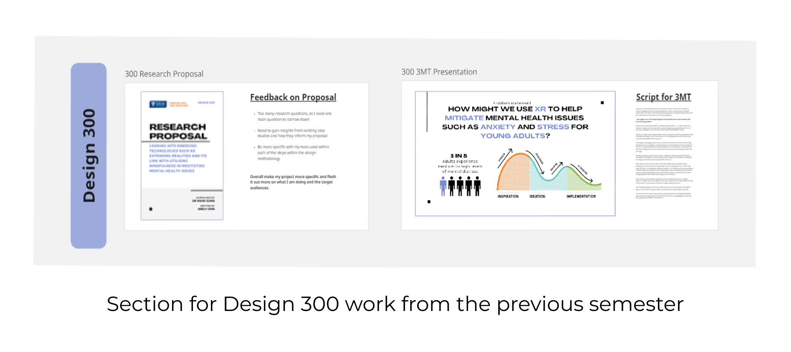
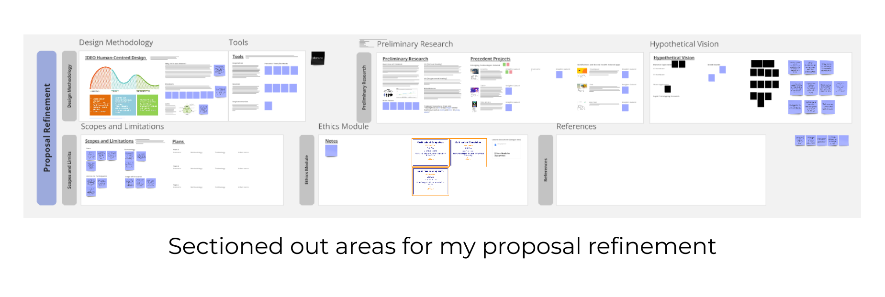
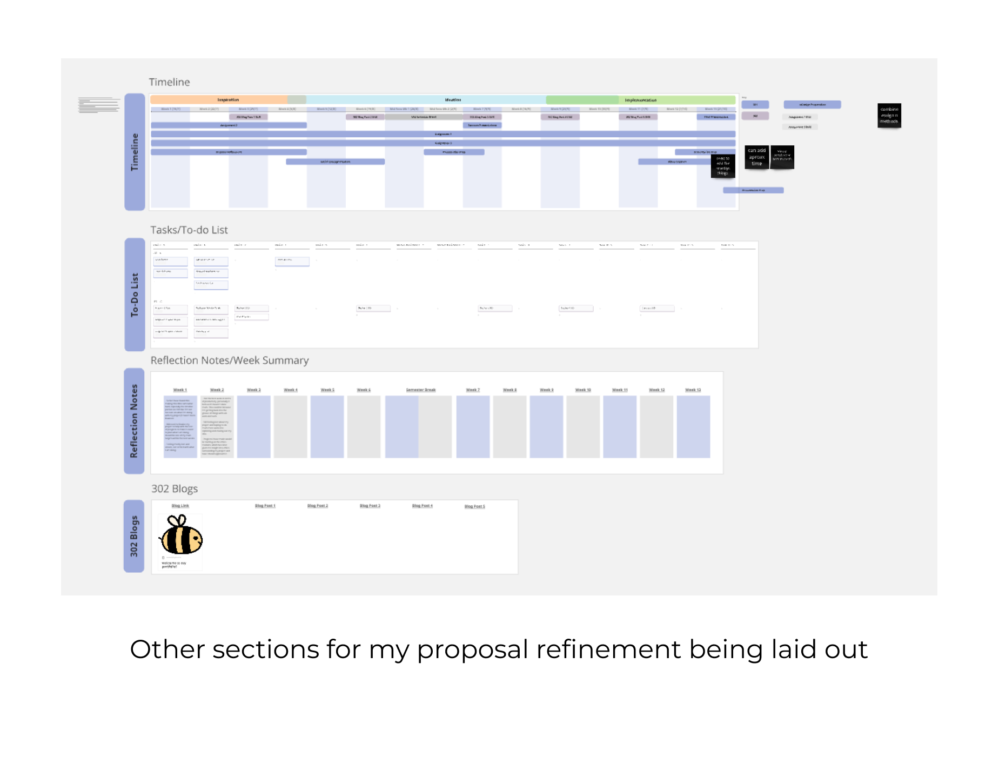
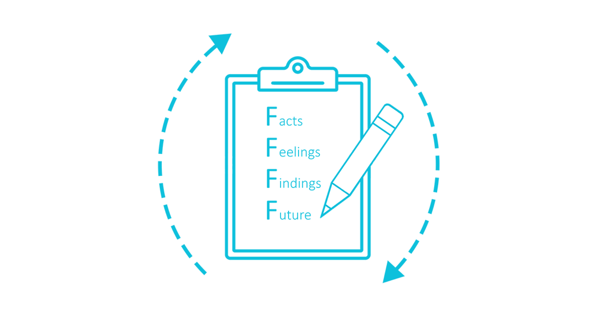

Blog 1 | Rough Beginnings and Uncertainty
Design 302 | Date: 26/07/24 (Friday)
General Reflection
This will be the first blog post of many, with this one being a bit late as so far within this design journey I have left somewhat confused and unsure for the past couple of weeks.
So far I have found this making this Miro somewhat hard, especially the timeline portion as I felt like I'm not too sure what I'm doing with my project as hasn't been completely finalised. Finalising my project will help with the rest of the progress to make it easier to plan what I am doing, this should be one of my main targets within the next weeks.
I’m mostly feeling lost and unsure, not settled with what I am doing. There is a general idea of the direction I want to go, but the idea doesn't seem to be “the one”.
Within week two, I felt like I didn't do much, it was not the best week in terms of productivity. This could be because I'm getting back into the groove of things with uni work and such. Still feel lost about my project and hope to do much more work exploring and craving out of my idea. These feelings could also be due to the fact that I haven't done much for my project since the first week.
My progress would start with the ethics modules, which have given me insight into the ethics surrounding my project and how I should approach it, despite the fact that we arent able to uphold and apply ethics within our research.
Progress
I've started to layout my miro board, with different sections for the design 301 assignment 2, with half of the sections being filled up currently.



Reflection Toolkit
During week 2, we learnt about the reflection toolkit, in which I have taken a liking to the four Fs method and will learn to use and try it out in future blog posts.
My main learnings from this toolkit are the four Fs are:
Facts, feelings, findings and future
Each helps the user to go through the 4 stages to help reflect on the situation, feelings, learnings and the future of this situation.

References
The four F’s of active reviewing. (2018, November 5). The University of Edinburgh.
https://www.ed.ac.uk/reflection/reflectors-toolkit/reflecting-on-experience/four-f